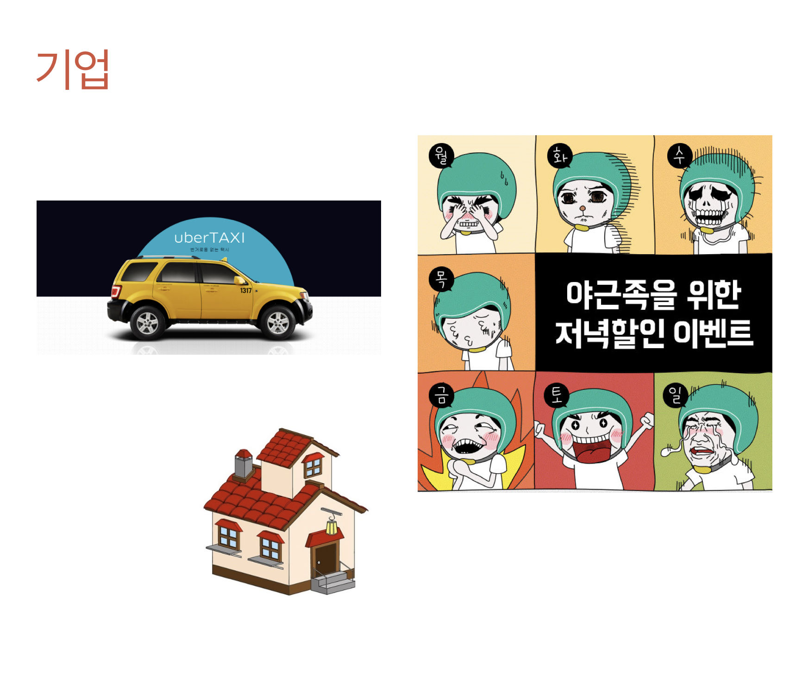
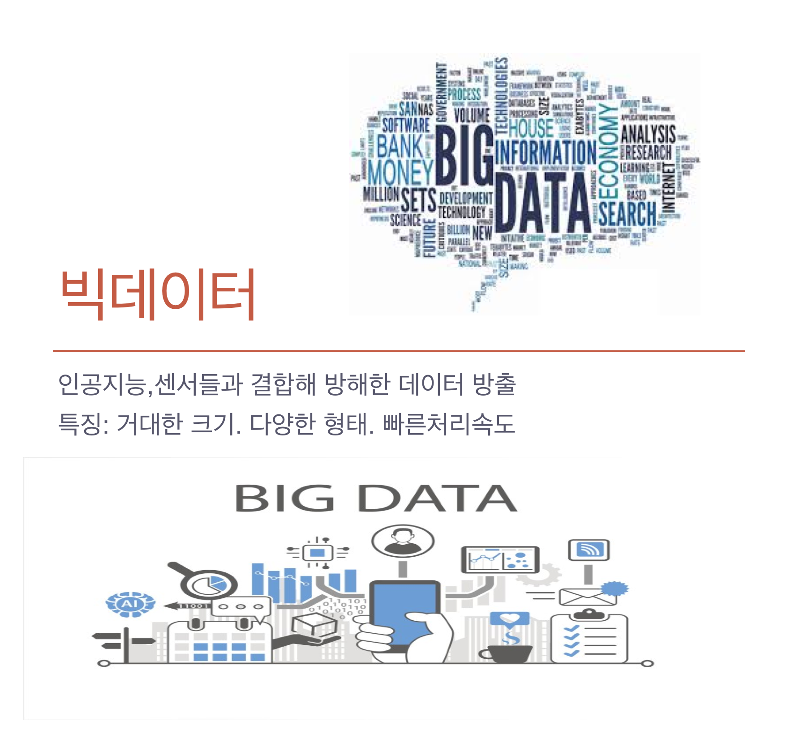

먼저 4차 산업혁명으로 벌어질 일에는 어떤 것들이 있을까요?
1.로봇이나 인공지능이 일자리를 대체할 것이다.
앞으로 13년간 자동화로 최대 8억개의 일자리가 사라질 것이라는 전망이 나왔다.
이는 전 세계 노동력의 5분의 1에 달하는 수치다.
다만 고령화, 신기술 도입 등에 따라 새 일자리도 5억개 이상 창출될 것으로 예상됐다.
국내에서는 2025년까지 인공지능(AI)과 로봇의 일자리 대체율이 70%에 달할 것으로 전망된다.
특히 농업이나 판매직 등 힘들고 반복되는 직업일수록 대체률이 높았다.
2. 디자이너와 엔지니어의 융합
이제 사람들은 기술에만 중요도를 두는 것이 아니라 디자인 또한 중요시 여겨 질 것이다.
(디자인기술융합)

Apple은 디자인기술융합에 사례 중 하나이다.
기술(Technology)과 인문학(Liberal Arts)의 교차점 그리고 서비스로 두터운 팬층을 가지고 있다.
3 생산이 비용이 0을 향해 간다.(무료화)
또, 1-3차 산업이 소품종 대량생산이였다면
4차 산업부터는 3D printer을 이용한 소비자 위주의 다품종 소량생산 시대가 온다.
4.공유경제 플랫폼

공유경제로 인해 플랫폼이 서비스나 재화를 소지하지 않고
플랫폼에 포함되어 있는 보유자가 소비자와 직통 연결되어 재화와 서비스를 공유한다.
5. 언론의 비리 등으로 언론의 종말이 오고 유튜브 등 1인매체가 인기를 얻는다.

6.빅데이터

machine learning과 deep learning 등으로 인공지능과 빅데이터 혹은 사물인터넷이 융합하며
방대한 양의 데이터가 생긴다.
7.3D printer

3D[1] 도면을 바탕으로 3차원 물체를 만들어내는 기계를 뜻한다.
가공의 용이성 등 여러 문제 덕분에 초창기에는 대부분 재료로 플라스틱을 사용하였지만
점차 종이, 고무,콘크리트, 식품에 금속까지 재료의 범위가 점점 넓어지고 있어서 단순히 조형물 출력 뿐만 아니라 건축[2],
설계 등의 향후가 기대되는 분야다.
3D 프린터 붐은 미국 오바마 대통령의 연설이 결정적인 역할을 했다.
2013년 2월 집권 2기 첫 국정연설에서 3D 프린터를 통해 미국 제조업에 차기 혁명을 일으키겠다고 선언했다.
이로 인해 미국 뿐 아니라 많은 나라들이 3D 프린터에 관심을 가지고 투자하기 시작했다.

위에서 언급했듯 3D 프린터는 플라스틱 뿐 아니 거의 모든 것을 재료로 쓸 수 있다.
때문에 인공장기 건축 등에서 큰 관심을 받고 있다.

3D printer는 위와 같은 방식으로 프린트 된다.
8.인공지능